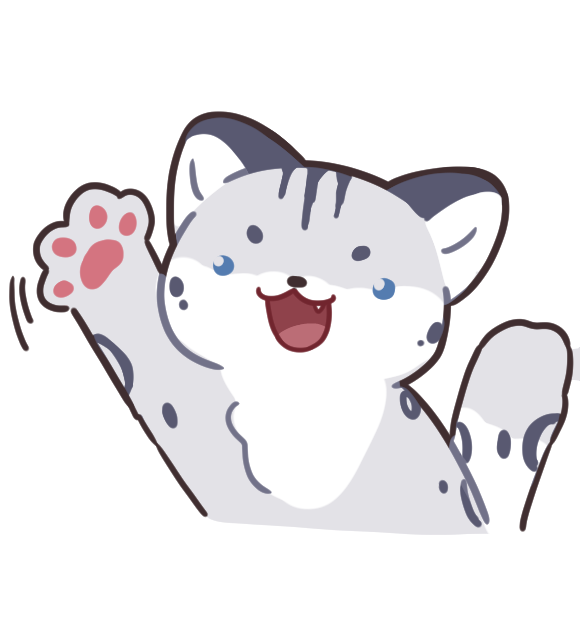

유설Seol 꼬순내 추적기
Chrome 알림을 켤까요?
놓친 방송과 커뮤니티·디스코드 새 글을 알려드려요.
추적기가 처음이신가요?
방송을 자동으로 여는 설정과 다시보기를 찾는 곳을 살펴보세요.
예시 · 종료된 방송 → 다시보기
최근 활동이 새로워졌어요
소식 바구니에서 방송·치지직·디스코드 소식을 골라 봐요.
나뉜 다시보기는 1부·2부를 골라 봐요.
준비 중
추적기를 준비하고 있어요
저장된 설정을 불러오고 있어요.
놓친 방송 알림
커뮤니티·디스코드 추적 켜짐
잠시 쉬기
즉시 재개6시간
추적과 알림 재시도를 바로 멈춰요.
슬라이더와 방향키로 5분씩 조절해요.
방송
불러오는 중- 최근 방송
- 기록 없음
- 마지막 확인
- 기록 없음
- 다음 확인
- —
놓친 방송 확인 지연
커뮤니티·디스코드
불러오는 중- 최근 글
- 기록 없음
- 마지막 확인
- 기록 없음
- 다음 확인
- —
이번 주 방송 발자국
발자국은 방송 시작일, 필름은 클립을 만든 날에 표시해요(한국시간).
필름을 누르면 그날 만든 클립을 볼 수 있어요. 지난 방송의 클립도 포함돼요.
‘준비 중’은 방송이 끝난 뒤 다시보기 링크를 기다리는 상태예요.
소식 바구니
아직 발견한 소식이 없어요